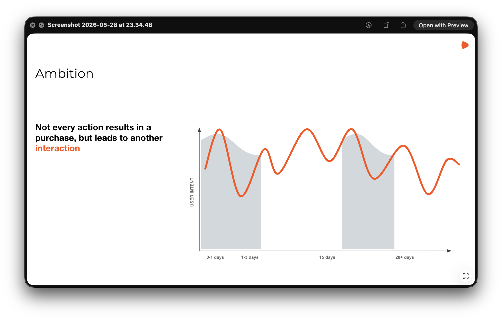
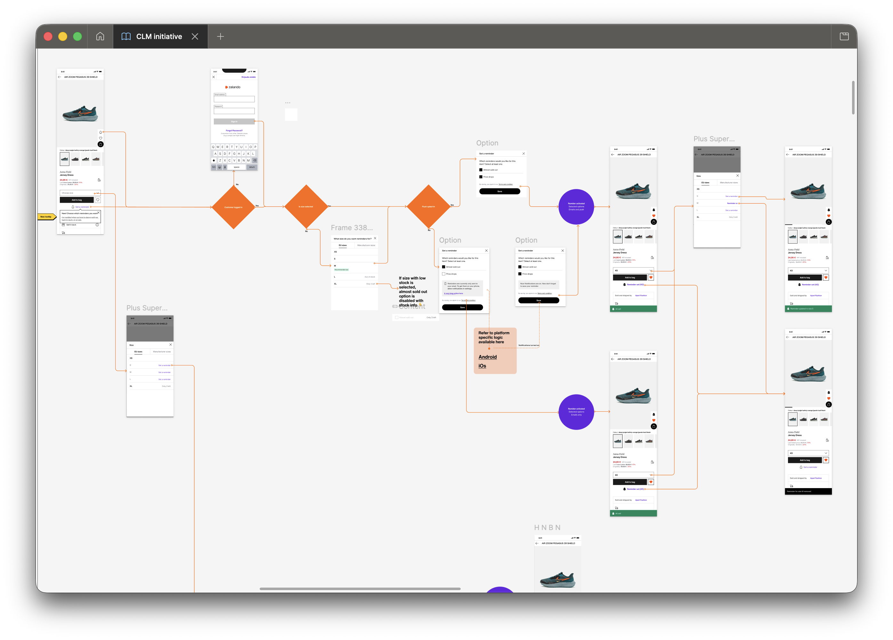

Zalando · 2022–2025
CRM at Zalando had always been a commercial topic. Product, marketing, business development, each optimising their own number. I was the first designer to sit inside the programme. The business metrics were hiding a category nobody had been tracking: the customers Zalando was failing silently.

CRM at Zalando touched hundreds of millions of customer interactions a year: 277M restock requests, 6M daily cart visits, push and email across dozens of markets. Six functions owned a slice of it: Product, Engineering, Business Development, Marketing, Data Science, Legal, each measured by their own metric. Nobody held the full picture of what the experience felt like end to end.
The brief was to increase CLV. No workstreams defined, no scope, no features. I was the only designer on the programme for two and a half years. Working with a business developer who owned forecasts and commercial logic, I identified what to build, shaped each brief, and delivered it. Notify Me, Communication Preferences, I&E Notifications: a few of the workstreams we proposed and shipped.
Notify Me was the first feature giving customers direct control at the item level: alerts when an out-of-stock item becomes available. Push was already a fragile channel, opt-out rates rising, and the customers most resistant to marketing were exactly the audience this feature needed to reach.
Three hard constraints: inconsistent legacy UX across devices, misaligned incentives across Business Development, Markets, and CRM, and a strict technical integration with Braze. I co-owned the product definition with a business developer and built the mockups that forced a decision. The PRFAQ was signed off in one review round. First experiment live December 2024. Reminder creation rate up 17.5%.
With M1 proven, M2 asked a harder question: what happened to the customers whose items never came back in stock?
45 to 53% of restock requests went unanswered for 14 to 90 days. 15% of items were ever restocked at all. These were customers who had raised their hand. Zalando said nothing back. I named it ghosting and designed the response. The idea was straightforward: when an item couldn't be restocked, suggest alternatives. The design problem was the logic inside it. Which signals indicate the customer still cares? When is the right moment to send? Which products qualify: not just similar items, but the right size, added to the site after the customer set the alert, matching the original intent rather than filling a slot. The logic of what to send, when, and why was mine.
Alongside it: tiered notification logic that prioritised Plus Superstars and CLM segments (0 to 1st order, 1st to 2nd order), so the highest-value customers got notified first on limited restocks.
Two years of data confirmed it. Relevant messages outperform volume on orders, on revenue, on retention. The customers Zalando had been failing silently were now being answered, and converting. I took that finding to the CRM director. That became Project Goldfish: a new CRM strategy in development, designed to reach 5.3M users across 10 markets.
Notify Me and Ghost-prevention are two workstreams from a programme that ran across many more. Interest Collection, which asked customers what they cared about and surfaced related collections, drove engagement gains with the same logic.
Total programme impact: >€15M GMV. Notify Me M2 alone grew revenue +€9.9M year on year. Ghost-prevention recovered €3.7M from previously silent requests.
